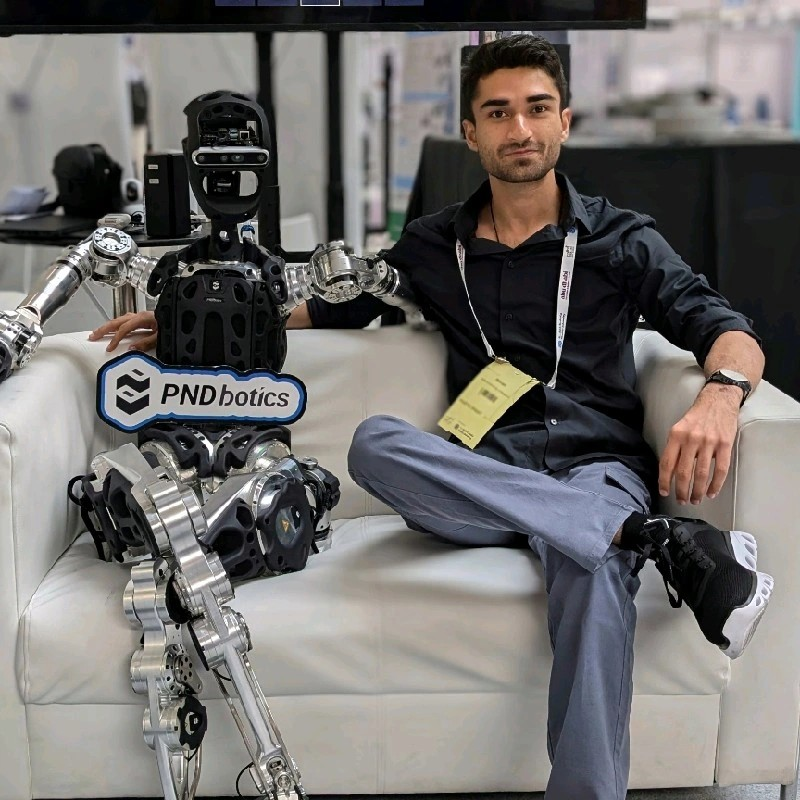
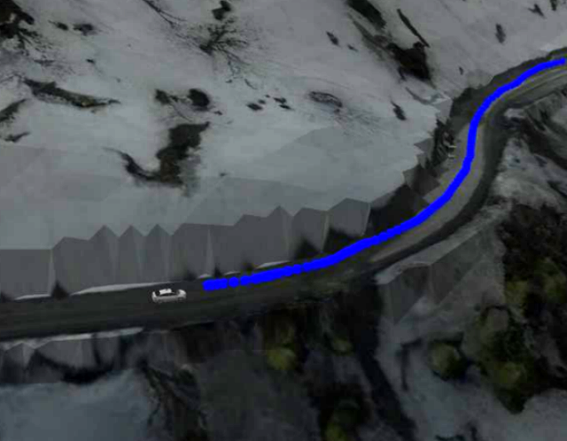

Shivam Sood |
|
| 
| CV |
Email |
Google Scholar |
|
Hello! I am a robotics Ph.D. student at National University of Singapore, advised by Prof. Guillaume Sartoretti. I received my Bachelor's degree in Mechanical Engineering at Indian Institute of Technology (IIT), Kharagpur , during which I was fortunate to work at MARMot Lab with Prof. Guillaume Sartoretti, and Stochastic Robotics Lab at IISc Bangalore with Prof. Shishir N. Y. Kolathaya. I was also a part of the Autonomous Ground Vehicle Research Group at IIT Kharagpur and various robotics competitions in IROS and Inter-IIT Technology Events. Email: shivamsood [AT] u.nus.edu |
{kind=link}
Publications |
|
APEX: Action Priors Enable Efficient Exploration for Skill Imitation on Articulated Robots
webpage |
pdf |
|
arXiv |
code
Learning by imitation provides an effective way for robots to develop well-regulated complex behaviors and directly benefit from natural demonstrations. State-of-the-art imitation learning (IL) approaches typically leverage Adversarial Motion Priors (AMP), which, despite their impressive results, suffer from two key limitations. They are prone to mode collapse, which often leads to overfitting to the simulation environment and thus increased sim-to-real gap, and they struggle to learn diverse behaviors effectively. To overcome these limitations, we introduce APEX (Action Priors enable Efficient eXploration): a simple yet versatile imitation learning framework that integrates demonstrations directly into reinforcement learning (RL), maintaining high exploration while grounding behavior with expert-informed priors. We achieve this through a combination of decaying action priors, which initially bias exploration toward expert demonstrations but gradually allow the policy to explore independently. This is complemented by a multi-critic RL framework that effectively balances stylistic consistency with task performance. Our approach achieves sample-efficient imitation learning and enables the acquisition of diverse skills within a single policy. APEX generalizes to varying velocities and preserves reference-like styles across complex tasks such as navigating rough terrain and climbing stairs, utilizing only flat-terrain kinematic motion data as a prior. We validate our framework through extensive hardware experiments on the Unitree Go2 quadruped. There, APEX yields diverse and agile locomotion gaits, inherent gait transitions, and the highest reported speed for the platform to the best of our knowledge (peak velocity of ~3.3 m/s on hardware). Our results establish APEX as a compelling alternative to existing IL methods, offering better efficiency, adaptability, and real-world performance. |
|

|
DecAP : Decaying Action Priors for Accelerated Learning of Torque-Based Legged Locomotion Policies
pdf |
|
arXiv |
code
Optimal Control for legged robots has gone through a paradigm shift from position-based to torque-based control, owing to the latter’s compliant and robust nature. In parallel to this shift, the community has also turned to Deep Reinforcement Learning (DRL) as a promising approach to directly learn locomotion policies for complex real-life tasks. However, most end-to-end DRL approaches still operate in position space, mainly because learning in torque space is often sample-inefficient and does not consistently converge to natural gaits. To address these challenges, we introduce Decaying Action Priors (DecAP), a novel three-stage framework to learn and deploy torque policies for legged locomotion. |
|
Force control for Robust Quadruped Locomotion: A Linear Policy Approach
webpage |
pdf |
|
paper |
This work presents a simple linear policy for direct force control for quadrupedal robot locomotion. The motivation is that force control is essential for highly dynamic and agile motions. Unlike the majority of the existing works that use complex nonlinear function approximators to represent the RL policy or model predictive control (MPC) methods with many optimization variables in the order of hundred, our controller uses a simple linear function approximator to represent policy. |
|

|
Multiple Waypoint Navigation in Unknown Indoor Environments
pdf |
|
arXiv |
code
Indoor motion planning focuses on solving the problem of navigating an agent through a cluttered environment. To date, quite a lot of work has been done in this field, but these methods often fail to find the optimal balance between computationally inexpensive online path planning, and optimality of the path. Along with this, these works often prove optimality for single-start single-goal worlds. To address these challenges, we present a multiple waypoint path planner and controller stack for navigation in unknown indoor environments where waypoints include the goal along with the intermediary points that the robot must traverse before reaching the goal. Our approach makes use of a global planner (to find the next best waypoint at any instant), a local planner (to plan the path to a specific waypoint) and an adaptive Model Predictive Control strategy (for robust system control and faster maneuvers). We evaluate our algorithm on a set of randomly generated obstacle maps, intermediate waypoints and start-goal pairs, with results indicating significant reduction in computational costs, with high accuracies and robust control. |
Competitions |
|  |
DRDO UAV-Guided UGV Navigation Challenge
Presentation
Co-organised by IIT Kharagpur and DRDO, India, as part of the Inter IIT Tech Meet 10.0, this challenge aimed to develop a UAV-guided navigation system which could guide cars on snowy terrains. Our team won first place, and also secured the Inter IIT Tech Meet 10.0 overall General Championship. |
|
|
IROS-RSJ Navigation and Manipulation Challenge 2021
Challenge |
Code
The task was to develop (in simulation) a mobile robot with a manipulator capable of multiple waypoint navigation and exploration. As the winning solution, we created a probabilistic route planner, which finds near-optimal solutions while respecting the computational capabilities of the robot and integrated this with an adaptive MPC. We presented this work at the International Conference on Control and Robotics 2022 in our paper "Multiple Waypoint Navigation in Unknown Indoor Environments" |
|
Pluto Drone Swarm Challenge
Code
Co-organised by IIT Kanpur and Drona Aviation, India, the goal of this challenge was to develop a vision based state feedback control for an indoor multi-drone system handling socket communication with the flight controller without the use of ROS. I led the team for this competition, won first place, and also secured the Inter IIT Tech Meet 11.0 overall General Championship. |
Projects |
|
End-to-End Deep RL based joint control for a hexapod robot
Documentation
This project is concerned with training a Proximal Policy Optimization based parallel DRL control policy for control of a hexapod robot lovingly named Yuna (based on a game character with different eye colors since that’s what Yuna’s LEDs look like :p). |
|
|
Representation-Free MPC control for quadruped locomotion The goal of the project was to develop a Representation Free Model Predictive Control for a in-house quadruped robot named Stoch3. This included solving for optimal Ground Reaction Forces based on a Single Rigid Body dynamics model while following gaits programmed using a finite state machine. The model used rotation matrices directly to get rid of the issues with euler angles (gimbal lock) and with quaternions(unwinding). |
|
|
Optimal and Geometric controls for AGVs
LQR Code |
Geometric Controls |
MPC Code |
This project is concerned with training a Proximal Policy Optimization based parallel DRL control policy for control of a hexapod robot lovingly named Yuna (based on a game character with different eye colors since that’s what Yuna’s LEDs look like :p). |
|
|
Multiple and Single shooting MPC for mobile robots
Code
This code includes various implementation of a model predictive control including multiple and single shooting methods. It includes both implementations for point tracking as well as trajectory tracking for mobile robots. |
Reviewer Service |
|
Conference on Robot Learning (CORL) 2025
International Conference on Robotics and Automation (ICRA) 2025 |
Extras |
Blog Posts: Model Predictive Control |